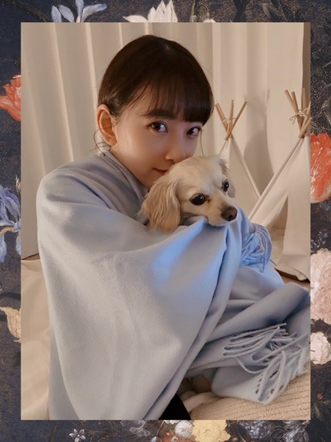
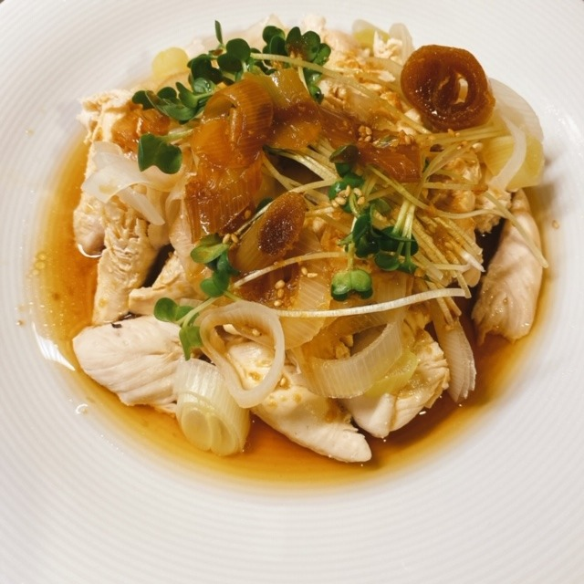
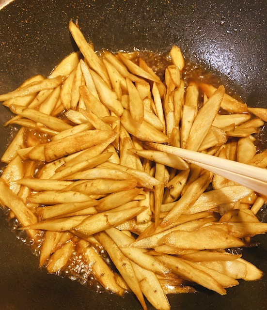

2020/0422Wedくっく
普段は時間がなくて
ゆっくり作れない時もあるけど
今はたっぷり時間があるので
いろんな料理をして過ごしています!
この機会にレパートリー増やすぞ〜
パーカーラクチン

お姉ちゃんが撮ってくれました☺︎
プティくんは、甘えんぼさんです
カワイイ〜
ちなみに今日は
きんぴらごぼう
ネギとえのきのつくねバーグ
鶏ささみの香味ダレかけ
豆腐とわかめの赤だし
を作りました!
家族が美味しいって言ってくれて
嬉しかったです☺︎


味付けうまくできて良かった!
すっぴんだと余計に目の下の
赤みが目立ちますなあ
アイシャドウをよく聞かれますが
元々涙袋の粘膜がピンクなんです...
アレルギー体質だからかな？
質問答えようと思うので
質問ください☺︎
ではでは
2020/04/22 20:00
コメント(1092)
未央奈さま
突然ですが・・・ 改めてですが・・・
貴女のファンになって良かった。
こんなにマメにブログを更新してくれるメンバーは
貴女だけです。
本当にありがとう。 その心使いに感嘆です。感謝です。
優しい貴女は素敵です。 家族も素敵なんですね。
これからもよろしく。
突然ですが・・・ 改めてですが・・・
貴女のファンになって良かった。
こんなにマメにブログを更新してくれるメンバーは
貴女だけです。
本当にありがとう。 その心使いに感嘆です。感謝です。
優しい貴女は素敵です。 家族も素敵なんですね。
これからもよろしく。
未央奈ブログ更新ありがとう！！
パーカー未央奈かわいい！
質問！
･毎朝のルーティンは！？
･この期間何してるの！？
･最近自分の家の犬が構ってくれないんだけどどうしたらいい？
パーカー未央奈かわいい！
質問！
･毎朝のルーティンは！？
･この期間何してるの！？
･最近自分の家の犬が構ってくれないんだけどどうしたらいい？
ハーフアップを綺麗にまとめるコツを教えてほしいです！！
鶏ささみの香味ダレかけの作り方教えて^_^いっし
ブログ更新ありがとう！
可愛いしオシャレだしお料理も上手だし
いい女すぎるよ
最近の日課未央奈ちゃんのブログ読むことになってる！
質問：
牛、鶏、豚、好きな順番は？
あとそのお肉の好きな食べ方も知りたい
よろしくお願いします！
可愛いしオシャレだしお料理も上手だし
いい女すぎるよ
最近の日課未央奈ちゃんのブログ読むことになってる！
質問：
牛、鶏、豚、好きな順番は？
あとそのお肉の好きな食べ方も知りたい
よろしくお願いします！
未央奈ブログ更新ありがとう！
質問ですがジムなどにも行けない中、普段家でどのようなストレッチやトレーニングをしてますか？教えていただけたら嬉しいです！
質問ですがジムなどにも行けない中、普段家でどのようなストレッチやトレーニングをしてますか？教えていただけたら嬉しいです！
サッカー好きですか？
ブログ更新ありがとう
コメント遅くてごめんねm(_ _)m届いてるかな？
最近双星の陰陽師ってマンガにハマってるんだけど読んだことある？
めっちゃ面白いから読んでみて！
コロナに負けず頑張りましょ〜
コメント遅くてごめんねm(_ _)m届いてるかな？
最近双星の陰陽師ってマンガにハマってるんだけど読んだことある？
めっちゃ面白いから読んでみて！
コロナに負けず頑張りましょ〜
未央奈ちゃんブログ更新お疲れ様！！
ひとつ質問します！
⚫︎好きなパンはなんですかーー
ちなみに僕はクリームパンが好きです！！
ひとつ質問します！
⚫︎好きなパンはなんですかーー
ちなみに僕はクリームパンが好きです！！
未央奈ちゃんブログ更新ありがとう！！
毎回毎回可愛すぎて…笑
Q.おすすめの腹筋割るトレーニングは？
毎回毎回可愛すぎて…笑
Q.おすすめの腹筋割るトレーニングは？
ピンクな涙袋かわいい♡♡
私も未央奈ちゃん見習って料理頑張ろう❣️
質問です♡
乾燥肌すぎて困ってるので、保湿力重視の
ボディクリーム教えて欲しいです♪
よろしくお願いします♪
私も未央奈ちゃん見習って料理頑張ろう❣️
質問です♡
乾燥肌すぎて困ってるので、保湿力重視の
ボディクリーム教えて欲しいです♪
よろしくお願いします♪
料理は興味あります。
1番一期生で仲良いのは？
みおちゃん大好き
みおちゃん大好き
ブログ更新ありがとう！
今日もかわいい写真ありがとう！
今は岐阜に戻ってるの？？？
今日もかわいい写真ありがとう！
今は岐阜に戻ってるの？？？
未央奈ちゃん、ブログ更新ありがとう
いつも楽しみにしてます
プティちゃんに負けないぐらい可愛いよ！
質問です
未央奈ちゃんはどうしてそんなに細いのですか？細くて折れてしまいそうで…
スタイルキープの方法とかオススメのダイエット法とかあったら教えて下さい！
いつも楽しみにしてます
プティちゃんに負けないぐらい可愛いよ！
質問です
未央奈ちゃんはどうしてそんなに細いのですか？細くて折れてしまいそうで…
スタイルキープの方法とかオススメのダイエット法とかあったら教えて下さい！
未央奈ちゃんの、
モーニングルーティンが
知りたいです(*´꒳`*)
モーニングルーティンが
知りたいです(*´꒳`*)
今年受験生です！
不安です……
なにかアドバイスありますか？
不安です……
なにかアドバイスありますか？
この自粛期間に初めて見たオススメ映画ありますか？
こんにちは‼︎
ブログ更新、ありがとうございます♪
お料理、すごいですね‼︎
おかず3品に、お味噌。
う〜ん、贅沢ですね♪
食材もたくさんで体に良さそうだし、美味しそうだし、そりゃ御家族の皆様も大満足でしょう‼︎
おかず2品以上作るのって、結構しんどいですよね。
段取り良くやらないと、お料理が冷めちゃったりするし。
お料理の手際がいい人って、すごいなあって思います♪
自分もたまに料理はするけど、カレーとか煮物とか炒め物とか、比較的簡単なものばかり。
しかも、煮物や炒め物は、我流の適当なものが多い(笑)。
煮物は醤油とお酒とみりんで味付けすればなんとかなるかな、とか、炒め物も、塩胡椒に、オイスターソースとかめんつゆとかで味を足せばなんとかなるかな、とか、そんなノリです♪
だから、未央奈のように、ちゃんと名前のついた料理ができる人に憧れます‼︎
しかも、あまり未央奈に料理のイメージがなかったから、なおさら感動。
将来、いい奥様になりますね♪
すっぴんの写真も、ありがとうございます♪
すっぴん、めちゃめちゃ綺麗じゃないですか…‼︎
お肌がとってもきれいだし、目の下の赤みのおかげでアイシャドウいらずだし、このままテレビ出れますよ♪
ええと、そうそう、質問ですよね。
プティ君もニコル君も小型犬ですが、大型犬を飼いたいと思ったことはありますか？
自分も大型犬を飼ったことはありませんが、将来の夢は、ゴールデンレトリバーを飼うことです‼︎
近所でお散歩している姿を見ると、それだけでほっこりします♪
とっても優しい目をしているんですよね〜
うちの猫ちゃんは性格が大人しいので、穏やかな性格同士、仲良くしてくれるんじゃないかなって思ってます♪
ではでは、また。
今日も未央奈にとっていい1日になりますように♪
ブログ更新、ありがとうございます♪
お料理、すごいですね‼︎
おかず3品に、お味噌。
う〜ん、贅沢ですね♪
食材もたくさんで体に良さそうだし、美味しそうだし、そりゃ御家族の皆様も大満足でしょう‼︎
おかず2品以上作るのって、結構しんどいですよね。
段取り良くやらないと、お料理が冷めちゃったりするし。
お料理の手際がいい人って、すごいなあって思います♪
自分もたまに料理はするけど、カレーとか煮物とか炒め物とか、比較的簡単なものばかり。
しかも、煮物や炒め物は、我流の適当なものが多い(笑)。
煮物は醤油とお酒とみりんで味付けすればなんとかなるかな、とか、炒め物も、塩胡椒に、オイスターソースとかめんつゆとかで味を足せばなんとかなるかな、とか、そんなノリです♪
だから、未央奈のように、ちゃんと名前のついた料理ができる人に憧れます‼︎
しかも、あまり未央奈に料理のイメージがなかったから、なおさら感動。
将来、いい奥様になりますね♪
すっぴんの写真も、ありがとうございます♪
すっぴん、めちゃめちゃ綺麗じゃないですか…‼︎
お肌がとってもきれいだし、目の下の赤みのおかげでアイシャドウいらずだし、このままテレビ出れますよ♪
ええと、そうそう、質問ですよね。
プティ君もニコル君も小型犬ですが、大型犬を飼いたいと思ったことはありますか？
自分も大型犬を飼ったことはありませんが、将来の夢は、ゴールデンレトリバーを飼うことです‼︎
近所でお散歩している姿を見ると、それだけでほっこりします♪
とっても優しい目をしているんですよね〜
うちの猫ちゃんは性格が大人しいので、穏やかな性格同士、仲良くしてくれるんじゃないかなって思ってます♪
ではでは、また。
今日も未央奈にとっていい1日になりますように♪
休みを活用して普段出来ない料理も出来ていいね

何人家族ですかー？？
質問です！みおなちゃんがもしメンバーとディズニー行くとしたら誰と行きたいですか？
未央奈ブログ更新ありがとう！
料理してるんだね。忙しいときはゆっくり作ってもいられないだろうから良い機会だね。
パーカー未央奈可愛い。シンプルな服でも可愛く見えるのってすごい。
プティくんも未央奈も可愛い。すごく良い写真だね。後ろに写っているテントみたいなものは何？
料理美味しそうだなあ。家族に美味しいって言ってもらえると嬉しいよね。
すっぴんもめちゃくちゃ可愛い！ホットギミックのときも思ったけど未央奈はすっぴんもすごく可愛いよ。
質問！ドライカレー以外で得意料理は何？何かやってみたい楽器はある？
では！
料理してるんだね。忙しいときはゆっくり作ってもいられないだろうから良い機会だね。
パーカー未央奈可愛い。シンプルな服でも可愛く見えるのってすごい。
プティくんも未央奈も可愛い。すごく良い写真だね。後ろに写っているテントみたいなものは何？
料理美味しそうだなあ。家族に美味しいって言ってもらえると嬉しいよね。
すっぴんもめちゃくちゃ可愛い！ホットギミックのときも思ったけど未央奈はすっぴんもすごく可愛いよ。
質問！ドライカレー以外で得意料理は何？何かやってみたい楽器はある？
では！
ブログ更新ありがとうございます！
質問です。
モデルになりたいんですけど、何かアドバイスありますか？
未央奈～！ブログありがとう
最後の写真、めちゃくちゃ可愛い
早速待ち受けにしました！(笑)
未央奈の事が大好きで握手会で会いたいけど、今は握手会出来ないから寂しいです。それでも未央奈はブログもモバメも頻繁にくれるから、たくさん元気をもらえるけどまだまだ足りません (贅沢ですみません
(贅沢ですみません )
)
この未央奈ロスを少しでも紛らわせるような事、何かないかなぁ？
最後の写真、めちゃくちゃ可愛い
早速待ち受けにしました！(笑)
未央奈の事が大好きで握手会で会いたいけど、今は握手会出来ないから寂しいです。それでも未央奈はブログもモバメも頻繁にくれるから、たくさん元気をもらえるけどまだまだ足りません
この未央奈ロスを少しでも紛らわせるような事、何かないかなぁ？
未央奈ぁー！ブログ更新ありがとう！
今未央奈がお気に入りの物教えてください！
お願いします！！
今未央奈がお気に入りの物教えてください！
お願いします！！
可愛すぎ❤
何回でも見れちゃいます！！
コロナウイルスが落ち着いたら1番したいことはなんですか？？
何回でも見れちゃいます！！
コロナウイルスが落ち着いたら1番したいことはなんですか？？
いつもブログめっちゃ楽しんで読んでます！！！
未央奈ちゃんに質問です！
家族と旅行するとしたらどこに行きたいですか？
これからも頑張ってください！
応援してます！
未央奈ちゃんに質問です！
家族と旅行するとしたらどこに行きたいですか？
これからも頑張ってください！
応援してます！
いつもブログありがとう！！質問したいことがたくさんあるので、4回目の投稿です！！2、3回目はコメント反映されてなかった(涙)
質問！最近泣いたのはいつですか？
私は夜寝るときに、理由もなく泣きたくなることが多いので、みおちゃんにもそういう経験があったら教えて欲しいです！
質問2！未央奈ちゃんのお父さんってどんな人？？お母さんのエピソードがすごく好きだから、堀家についてもっと知りたい！
質問3！宇宙人っていると思う？？堀ちゃんが昔月に行きたいって言ってたから、宇宙人とか信じてるのかなぁってすごく気になる！あとどんな宇宙人かイラストも描いてくれたら嬉しい！
質問4！ももんがは好きですか？
長くなっちゃってごめんよお！
ももんが
質問！最近泣いたのはいつですか？
私は夜寝るときに、理由もなく泣きたくなることが多いので、みおちゃんにもそういう経験があったら教えて欲しいです！
質問2！未央奈ちゃんのお父さんってどんな人？？お母さんのエピソードがすごく好きだから、堀家についてもっと知りたい！
質問3！宇宙人っていると思う？？堀ちゃんが昔月に行きたいって言ってたから、宇宙人とか信じてるのかなぁってすごく気になる！あとどんな宇宙人かイラストも描いてくれたら嬉しい！
質問4！ももんがは好きですか？
長くなっちゃってごめんよお！
ももんが
ブログの更新多くて嬉しいありがとう！！
最近1番笑ったことは？
I want you!
I need you!
I love you!
家ではどんな運動してますか？
乃木坂の中で好きな曲ってなにー？？
やーい！！みおなごぼう大好きのおいらに言わせるとごぼうはなるべく皮を残して料理したほうがいいね！！まあちょっと土臭さが残るから嫌いな人にはなんだけどごぼうらしさが十分味わえるのは皮があるか無いかでだいぶ違うしかみ締めたときの味わいがぜんぜん違うね ごぼうは厚さ１ｍｍくらいにスライスして揚げたごぼうチップスがおいしいよ
ごぼうは厚さ１ｍｍくらいにスライスして揚げたごぼうチップスがおいしいよ
こんにちは!
ブログ更新ありがとう☺︎！
いつも楽しく読ませていただいてます♪
今、テレビ愛知でドラマ「麗」が放送してて
第4話から観てます！(放送してたの気づくのが遅れて笑)
とてもハマってます♪
質問は、
将来や目標として、なりたい自分について教えてください☺︎
호리 미오 나나 모두가 좋아❤︎
ではまた
ブログ更新ありがとう☺︎！
いつも楽しく読ませていただいてます♪
今、テレビ愛知でドラマ「麗」が放送してて
第4話から観てます！(放送してたの気づくのが遅れて笑)
とてもハマってます♪
質問は、
将来や目標として、なりたい自分について教えてください☺︎
호리 미오 나나 모두가 좋아❤︎
ではまた
ライス大盛り下さい。
料理お上手ですね！食べてみたい！
僕も堀ちゃんと同じ岐阜出身です。
堀ちゃんは岐阜に帰ったらどっか行きたいとこある？
個人的には地元に帰ってきて体を休めて欲しいので観光がてら下呂温泉
に行ったり、岐阜の郷土料理味わったりして楽しんでほしいな〜
コロナおさまったらまた岐阜に来てね！
相談事なんだけど、堀ちゃんが思う理想の男性の服装教えてください！
もう高校生になったし少し大人っぽい服装とかしてみたいな…
これからも応援してます！
僕も堀ちゃんと同じ岐阜出身です。
堀ちゃんは岐阜に帰ったらどっか行きたいとこある？
個人的には地元に帰ってきて体を休めて欲しいので観光がてら下呂温泉
に行ったり、岐阜の郷土料理味わったりして楽しんでほしいな〜
コロナおさまったらまた岐阜に来てね！
相談事なんだけど、堀ちゃんが思う理想の男性の服装教えてください！
もう高校生になったし少し大人っぽい服装とかしてみたいな…
これからも応援してます！
ピヨピヨピヨピヨ
JK1のひよこです
握手会行きたいです
ひよこの名札つけてくので覚えててくれたら嬉しいです
すっぴんも可愛いなぁ
すっぴん風に見せるメイクみせてー
ハーフアップお団子やってほしい！
絶対似合うと思うんだ
《質問》
①どんな髪型の女子が好き？
②ひよこ好きー？
③JKデビューまでにやるべなきことは？
④好きなアニメは？そのアニメの推しキャラは？
JK1のひよこです
握手会行きたいです
ひよこの名札つけてくので覚えててくれたら嬉しいです
すっぴんも可愛いなぁ
すっぴん風に見せるメイクみせてー
ハーフアップお団子やってほしい！
絶対似合うと思うんだ
《質問》
①どんな髪型の女子が好き？
②ひよこ好きー？
③JKデビューまでにやるべなきことは？
④好きなアニメは？そのアニメの推しキャラは？
やっぱり未央奈が世界で1番綺麗で好き！
プティくんになりたい…
プティくんになりたい…
みおなちゃん！こんにちは
いま、結構テレビで過去のドラマの再放送とかやってるけど、
何か見てる？？
いま、結構テレビで過去のドラマの再放送とかやってるけど、
何か見てる？？
こんにちは！
料理美味しそうですね。
私も家のお手伝いしないとなぁ..。
パーカーの堀ちゃんかわいいです！
私は家にいるときはトレーナーを着ています。
パーカーも欲しいんですがお店がやっていないので、ゲットできず..。
はやくお買い物したいです。
質問です。
パーカーの話題が出てきたので、
写真のパーカーはどこのお店のものですか？
それでは。
次のブログ楽しみにしています。
料理美味しそうですね。
私も家のお手伝いしないとなぁ..。
パーカーの堀ちゃんかわいいです！
私は家にいるときはトレーナーを着ています。
パーカーも欲しいんですがお店がやっていないので、ゲットできず..。
はやくお買い物したいです。
質問です。
パーカーの話題が出てきたので、
写真のパーカーはどこのお店のものですか？
それでは。
次のブログ楽しみにしています。
林瑠奈さんとは何か話しましたか？
今、お猿のホーリー見てました笑
いつも未央奈ちゃんのブログ更新楽しみに待ってます！
사랑해요♡사랑해요♡사랑해요♡
いつも未央奈ちゃんのブログ更新楽しみに待ってます！
사랑해요♡사랑해요♡사랑해요♡
質問です！一番得意な料理はなんですか？
久しぶりに箸くんみたいです！
ファンレターって送ったら、メンバーの人に届くものなんですか？
あと、届くなら、大体送ってから、どのくらいの期間で手元に行くんですか？？
あと、届くなら、大体送ってから、どのくらいの期間で手元に行くんですか？？
未央奈ブログ更新ありがとう！！
しつもん〜
未央奈のハマってる、お気に入りの物教えて！
しつもん〜
未央奈のハマってる、お気に入りの物教えて！
体の引き締め方教えて欲しい！やっぱ筋トレとかですか？？
未央奈見て自分磨き頑張るね•̀.̫•́✧
未央奈見て自分磨き頑張るね•̀.̫•́✧


今、1番行ってみたい県はどこですか？